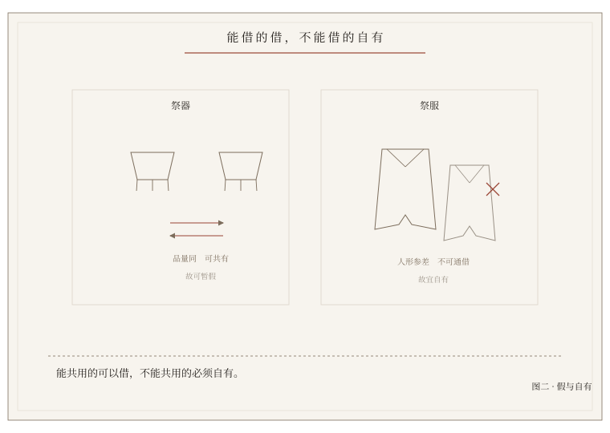

曲礼下 · 二·二十三 · 第 146 课
没有田禄的人不置祭器；有田禄的人，先造祭服。注「祭器可假，祭服宜自有」。
说什么事：无田禄者不设祭器，有田禄者先为祭服。
落在哪一层：礼。论「何人可以造器」与「何物不可借」。
为何编在此位：上节说先造祭器，此节立刻补一句限制：造器要有田禄。礼的允许，总带着条件。
【经】無田祿者不設祭器，有田祿者先為祭服。
【注】祭器可假，祭服宜自有。
【疏】「无田」至「祭服」。乡明得造祭器，此明不得造者，下民也。若大夫及士有田禄者乃得造器，犹不具，唯天子大夫四命以上者得备具。若诸侯大夫非四命，无田禄，则不得造，故《礼运》云：「大夫磬乐皆具，祭器不假，非礼也。」……「有田禄者先为祭服」者，若有田禄，虽得造器，而先为祭服，后为祭器耳。所以然者，缘人形参差，衣服有大小，不可假借，故宜先造；而祭器之品量同官可以共有，以其制同，既可暂假，故营之在后。
田禄 田之所出，禄之所入。有无田禄，是能不能造器的前提。
设 置也。不设，不是不用，是不置。
祭服 祭时所著之服。
假 借也。注「祭器可假，祭服宜自有」。
人形参差 疏语。人的身形长短不一，衣服不能通借。
品量同官可以共有 疏语。祭器形制统一，可共用。
没有田禄的人不置祭器；有田禄的人，先做祭服。
此节把上节的次序加了一道前提，又换了一个次序。前提是田禄，次序是祭服先于祭器。前者论「能不能」，后者论「先做哪一件」。礼的精密，常在两句之间。
第一层 器与位的对应 能否造祭器，不取决于孝心，取决于田禄。礼不肯让一个无力的人承担一套他担不起的排场。
第二层 服不可假 疏所给的理由极实：人身长短不一，衣服不合身即不成礼。祭器形制相同，可暂借。此中有一层洞见：能共用的东西可以借，不能共用的东西必须自有。
第三层 「犹不具」 有田禄者得造器，然未必能备具；唯天子大夫四命以上得备。位置越高，允许越全；这也是一种等差。
第四层 与《礼运》相校 疏引《礼运》「祭器不假，非礼也」。可见「假」在礼中是常态，不是权宜。今人以为借器不敬，古人以为借器合礼。
与今日何干 能借的就借，不能借的必须自己备。礼服是「合身」之事，祭器是「通用」之事——今日的制服与器具，仍是这条界线。
| 左 | 右 |
|---|---|
| 无田禄者不设祭器 | 力不能造，则不自造 |
| 有田禄者先为祭服 | 服不可假，故先 |
| 祭器可假 | 品量同，可共有 |
| 祭服宜自有 | 人形参差，不可通借 |
| 得造器犹不具 | 唯四命以上得备具 |
| 祭器不假为非礼 | 《礼运》之文，须辨其读 |
画左右两格：左格一件叠得齐整的祭服（交领、宽袖，只画轮廓与领口），服旁一只手上举、作承接状（只画手与腕），手与服之间画一道细实线相连；右格两只相同的三足器并置，一器在案上、一器正被另一只手递来，两器之间画一道极淡的虚线，示意可以通借。两格之间一道细竖线。不写文字。赭色只用在左格祭服的领口上。
